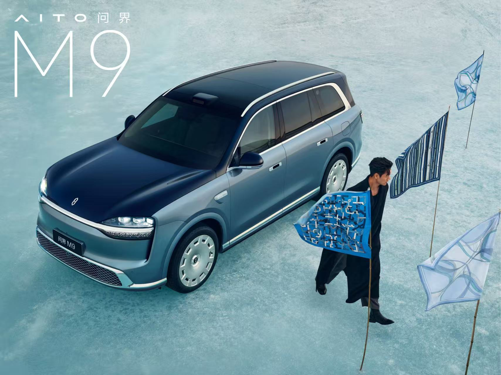
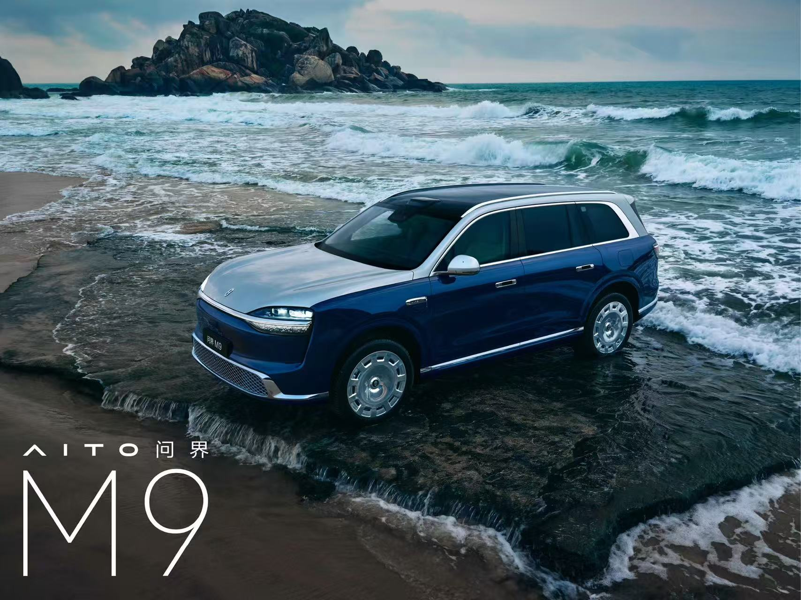
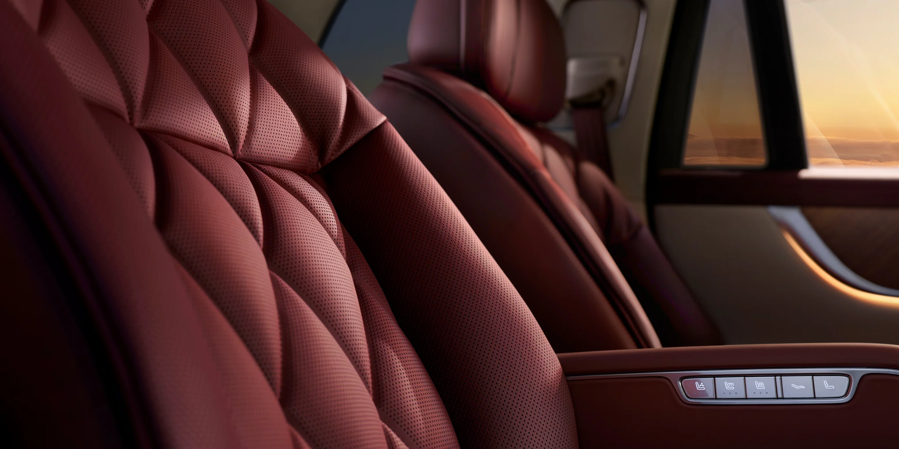
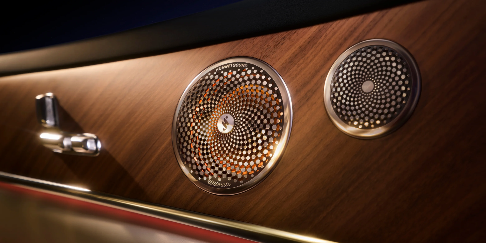

Work @ AITO
Perceptual Quality Experience Engineer
2025.07 - Present

Exterior Quality
Responsible for perceptual quality evaluation of AITO M9, focusing on exterior appearance, CMF materials and craftsmanship.


Interior Quality
Focused on interior material expression, surface quality and sensory consistency to achieve premium experience.

Detail Experience
Material texture, surface treatment, gap & flush and tactile feedback shape the final product perception.


Virtual Validation
VR simulation was used to evaluate vehicle experience before physical validation, supporting design optimization.


VR simulation reference images
(Source: Internet)